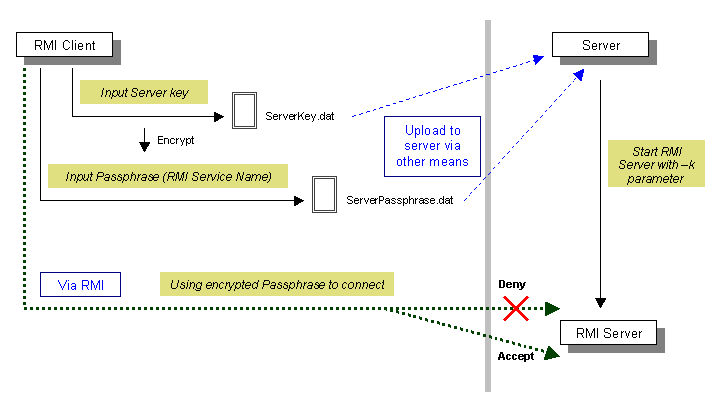

|
RMIAdmin is compriesed of two separate programs: a server and a client.
The server application creates some remote objects, makes references to them accessible, and waits for clients to invoke methods on these remote objects, which are registered with the RMI's simple naming facility - the RMIREGISTRY. While the client application gets a remote reference (by looking up the remote registry) to one or more remote objects in the server and then invokes method on them. RMIAdmin allows registered user to achieve secure connection only from validated client by means of encrypting the remote RMI's service name based on a pre-defined key, the RMI Server could then be started using the -k parameter, which indicates that an encrypted service name will be binded to the RMIREGISTRY, only client with the valid key which can decrypt the remote RMI service name can connect with this RMI Server. See the below diagram for details:  The above illustration depicts the distributed architecture of RMIAdmin that uses the registry to obtain a reference to a remote object. The RMI Server calls the registry to associate (or bind) a name with a remote object. The RMI Client then looks up the remote object by its name in the RMI Server's registry and then invokes a method on it. Usage Instructions:
|
|
|
Copyright 2005 © RMIAdmin. All rights reserved. |